ADS File Manager
Synology NAS의 파일을 스마트폰, 태블릿, Android TV에서 탐색하고, 기기 저장소와 NAS 사이에서 파일을 주고받는 파일 관리자입니다.
Google Play 출시 준비 중
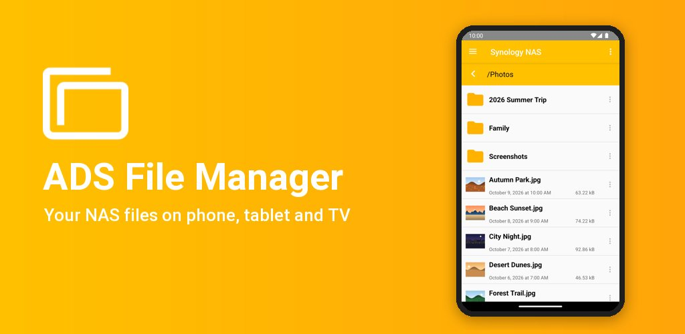
이 앱을 사용하려면 File Station을 사용하는 Synology NAS가 필요합니다.
NAS의 파일을 어느 기기에서나
ADS File Manager(Advanced DS File Manager)는 Synology가 공개한 File Station API 문서를 바탕으로 만든 독립 개발 앱으로, Synology Inc.와 관계가 없습니다. NAS의 파일과 폴더를 탐색하고, 기기의 내부 저장소나 SD 카드와 NAS 사이에서 파일을 주고받을 수 있습니다.
NAS 파일 관리
탐색과 검색, 업로드·다운로드, 복사·이동·이름 바꾸기·삭제, NAS의 압축 파일 풀기까지 한 앱에서 합니다.
안전한 연결
NAS 주소나 QuickConnect ID로 연결하고, HTTPS와 2단계 인증, 신뢰하는 기기 등록을 지원합니다.
Android TV
리모컨 방향키만으로 NAS의 파일을 탐색하고, 동영상은 외부 플레이어로 재생합니다.
화면으로 보기
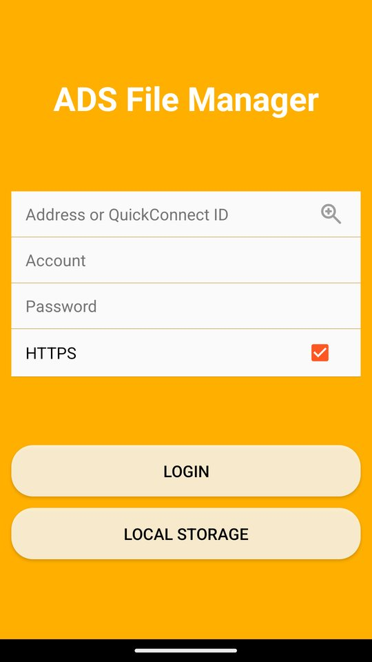
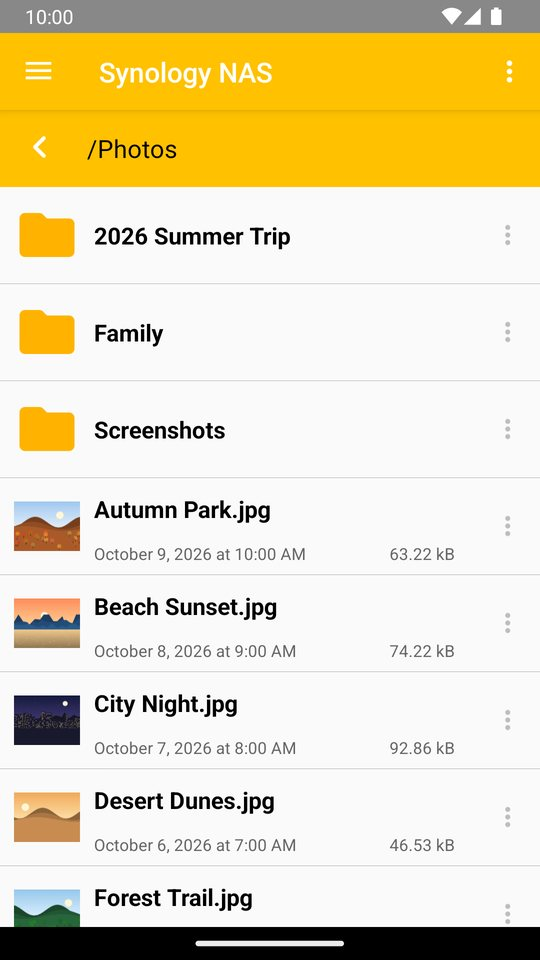
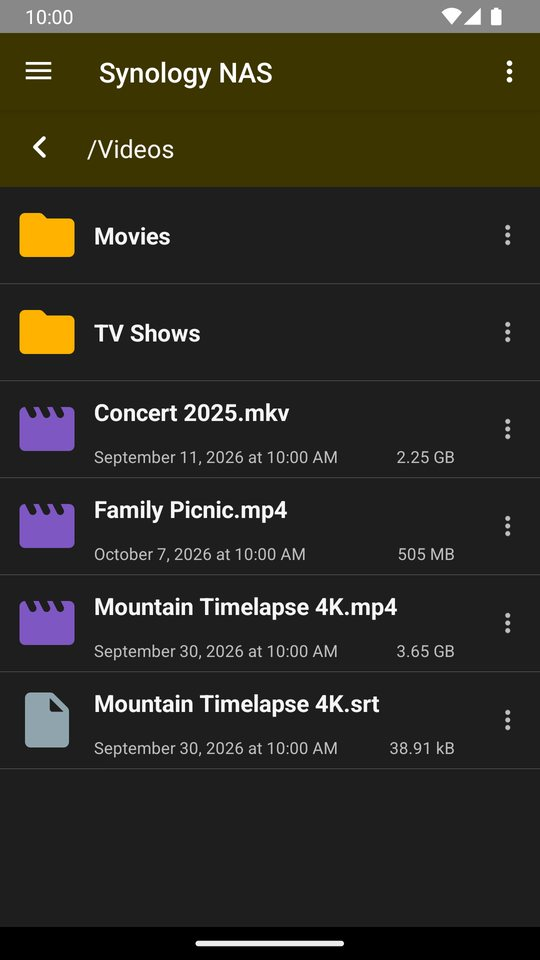
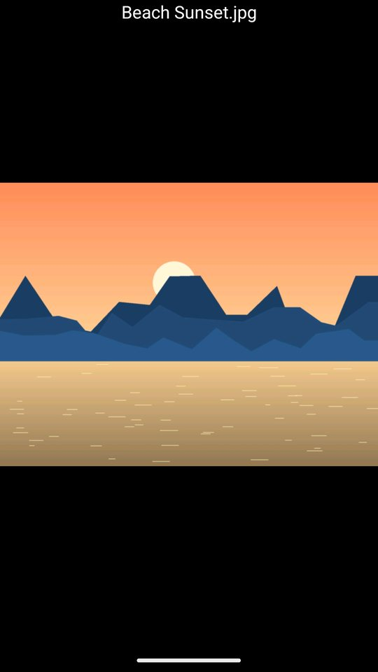
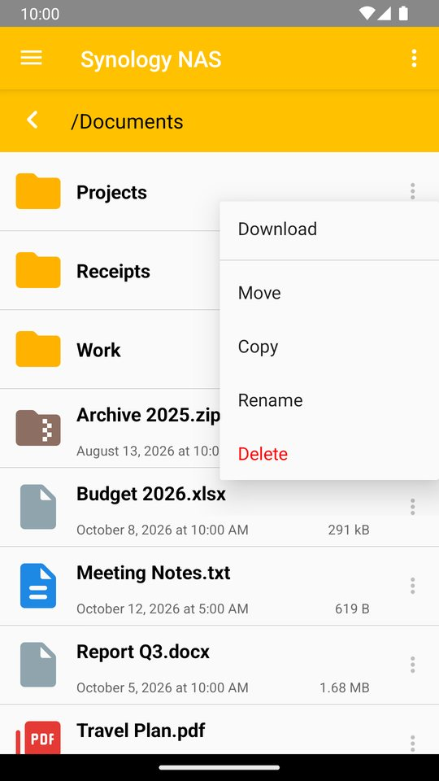
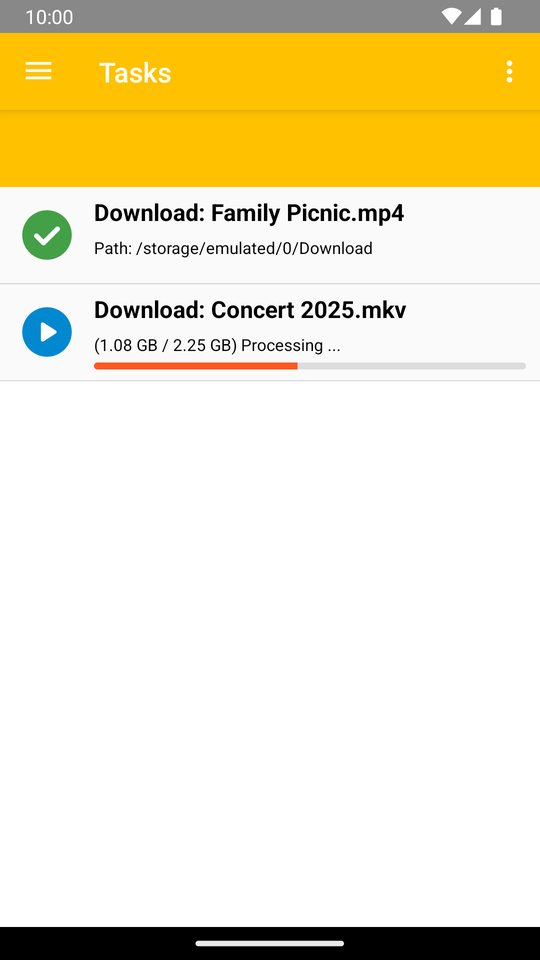
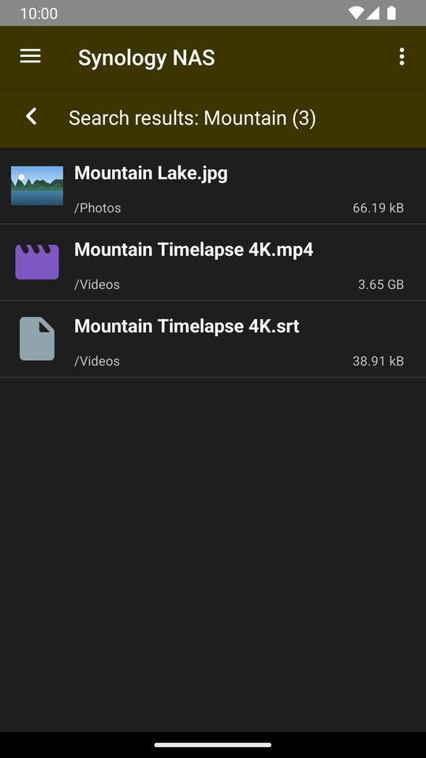
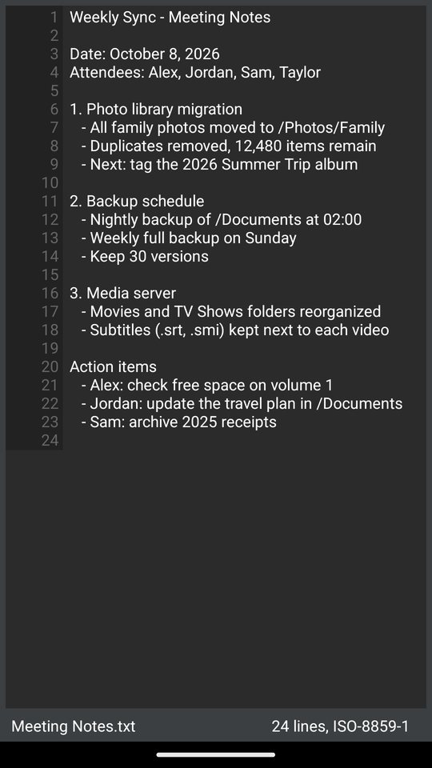
← 좌우로 밀어서 더 보기 →
NAS 파일 관리
- File Station 파일과 폴더 탐색, 검색
- 업로드, 다운로드, 복사, 이동, 이름 바꾸기, 삭제, 폴더 만들기
- NAS의 압축 파일 풀기
- 끊긴 단일 파일 다운로드를 이어서 받기
- 백그라운드 전송과 진행 상태 알림
연결과 보안
- NAS 주소 또는 QuickConnect ID로 연결
- HTTPS 연결
- 2단계 인증(OTP)과 신뢰하는 기기 등록
- 자체 서명 인증서를 쓰는 NAS도 처음 연결할 때 인증서 지문을 확인한 뒤 안전하게 연결
기기 저장소
- 내부 저장소와 SD 카드 파일 관리
- 기기와 NAS 사이 파일 전송
전체 파일 접근 권한은 기기의 여러 저장소 위치에서 파일과 폴더를 탐색하고 복사, 이동, 삭제 및 NAS로 전송하는 파일 관리자 기능에 사용합니다. 사용자가 요청한 파일 작업 외의 목적으로 저장소 데이터를 사용하지 않습니다.
미리보기와 재생
- 이미지와 텍스트 파일 미리보기
- MX Player 연동(자막 함께 전달), 그 밖의 동영상 앱으로도 재생
- 재생 위치를 NAS에 저장해 다른 기기에서 이어보기
- 기기나 NAS의 APK 파일을 열어 Android 설치 화면으로 넘기기
- 라이트, 다크 테마
Android TV
리모컨 방향키 탐색에 맞춘 화면으로, 거실 TV에서도 NAS의 사진과 동영상을 바로 찾을 수 있습니다.
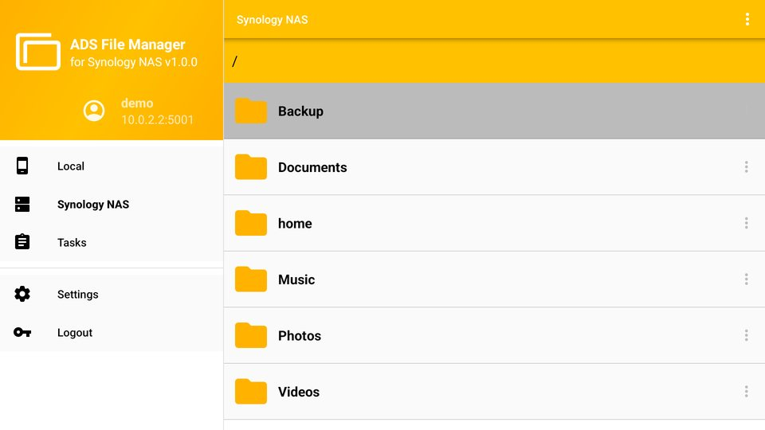
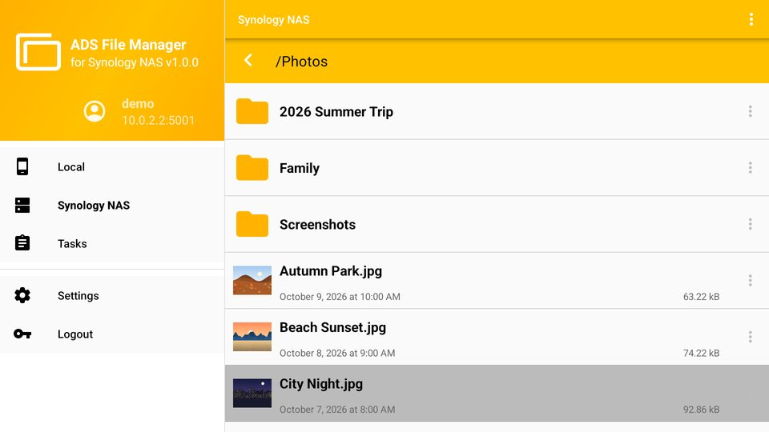
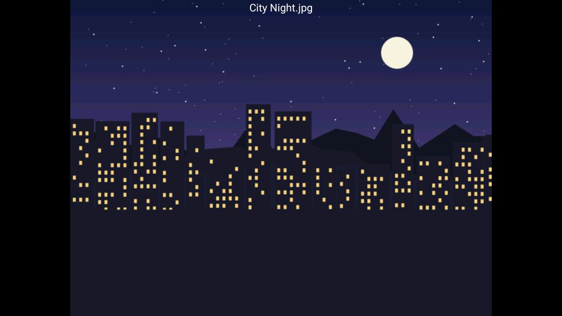
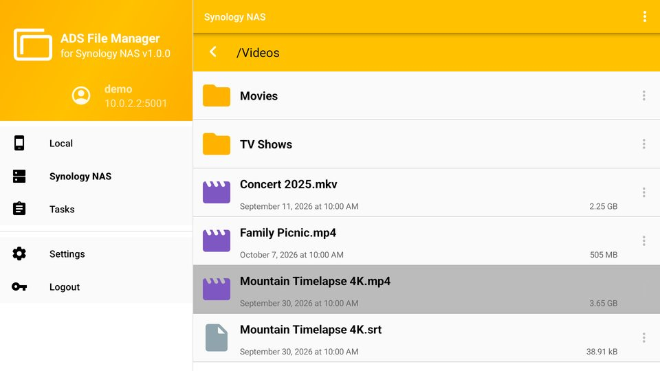
개인정보
- 운영자가 운영하는 서버나 회원 가입이 없습니다
- NAS 주소, 계정, 비밀번호는 기기 안에만 저장하며 비밀번호는 암호화합니다
- 파일은 기기와 내 NAS 사이에서만 오갑니다
- 사용 통계와 오류 분석을 위해 Google Firebase(Analytics, Crashlytics)를 사용합니다
- 광고가 없습니다
사양
| 지원 기기 | Android 7.0 이상 스마트폰·태블릿, Android TV |
|---|---|
| 필요한 것 | File Station을 사용하는 Synology NAS |
| 연결 방식 | NAS 주소(HTTP/HTTPS) 또는 QuickConnect ID |
| 광고 | 없음 |
Synology, DSM, File Station, QuickConnect는 Synology Inc.의 상표입니다. ADS File Manager는 Synology Inc.와 관계가 없는 독립 개발 앱이며, Synology Inc.가 만들거나 보증하지 않았습니다.
Requires a Synology NAS with File Station.
Your NAS files, on any device
ADS File Manager (Advanced DS File Manager) is an independent app, not affiliated with Synology Inc., built on Synology's publicly available File Station API documentation. Browse files and folders on your NAS, and transfer files between the NAS and your device's internal storage or SD card.
NAS file management
Browse and search, upload and download, copy, move, rename, delete and extract archives on the NAS, all in one app.
Secure connections
Connect by NAS address or QuickConnect ID, with HTTPS, two-factor authentication and trusted devices.
Android TV
Browse your NAS with just the D-pad remote and play videos in an external player.
Screens
← swipe for more →
NAS file management
- Browse and search File Station files and folders
- Upload, download, copy, move, rename, delete and create folders
- Extract archives on the NAS
- Resume interrupted single-file downloads
- Background transfers with progress notifications
Connection and security
- Connect by NAS address or QuickConnect ID
- HTTPS connections
- Two-factor authentication (OTP) and trusted devices
- Self-signed NAS certificates: confirm the fingerprint on first connection, then connect securely
Device storage
- Manage internal storage and SD card files
- Transfer files between the device and the NAS
All files access is used for the core file manager features: browsing, copying, moving and deleting files and folders across the device's storage locations and transferring them to the NAS. Storage data is used only for the file operations you request.
Preview and playback
- Preview images and text files
- MX Player integration with subtitles; other video apps also supported
- Resume playback on another device (positions saved on the NAS)
- Open APK files from the device or NAS in the Android package installer
- Light and dark themes
Android TV
Screens designed for D-pad remote navigation, so you can find the photos and videos on your NAS right from the living room TV.
Privacy
- No operator-run server, no account with us
- Your NAS address, account and password stay on the device, with the password stored encrypted
- Files travel only between your device and your NAS
- Google Firebase (Analytics, Crashlytics) is used for usage statistics and crash analysis
- No ads
Specifications
| Supported devices | Phones and tablets on Android 7.0 or later, Android TV |
|---|---|
| Requires | A Synology NAS with File Station |
| Connection | NAS address (HTTP/HTTPS) or QuickConnect ID |
| Ads | None |
Synology, DSM, File Station and QuickConnect are trademarks of Synology Inc. ADS File Manager is an independent app and is not affiliated with, made by or endorsed by Synology Inc.